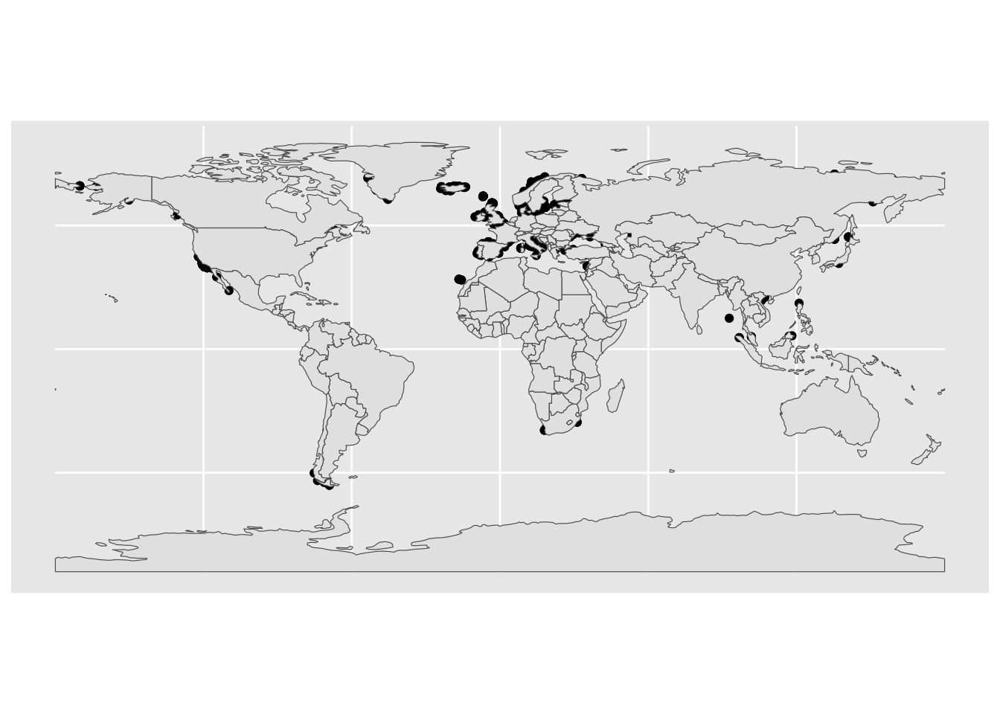
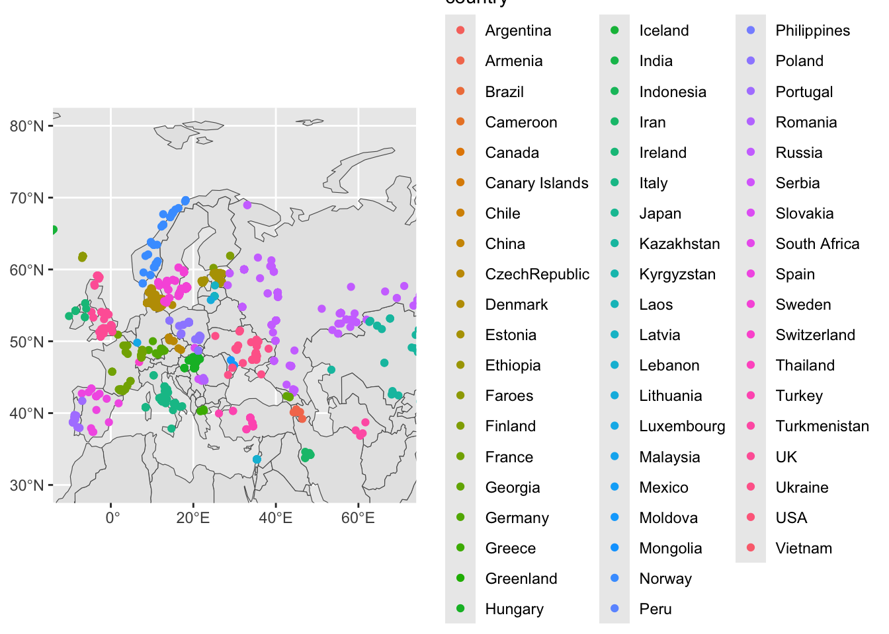
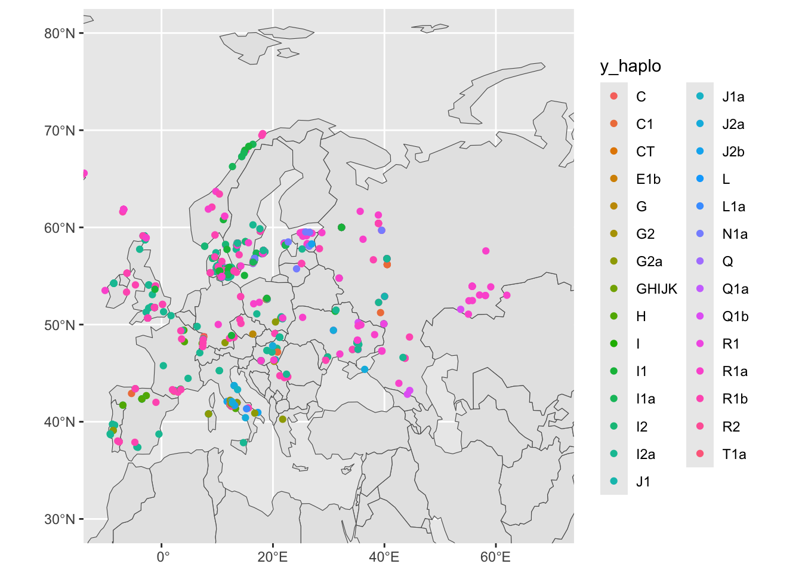
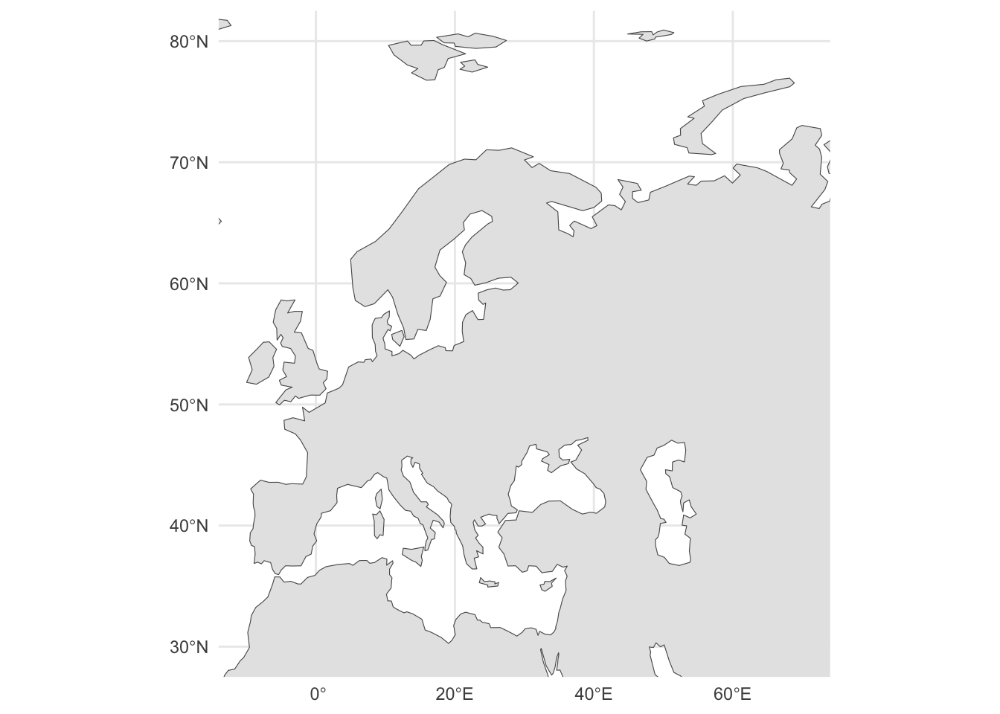
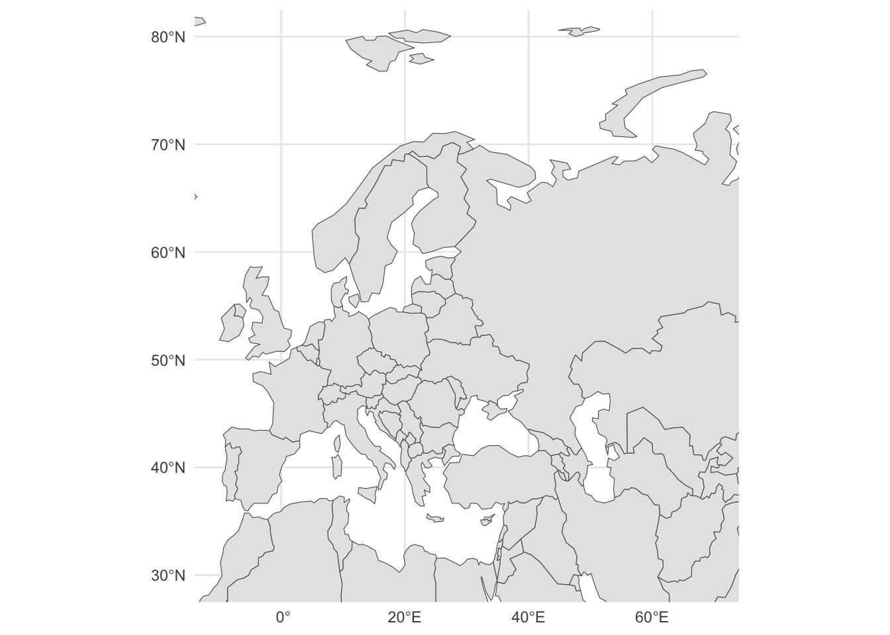
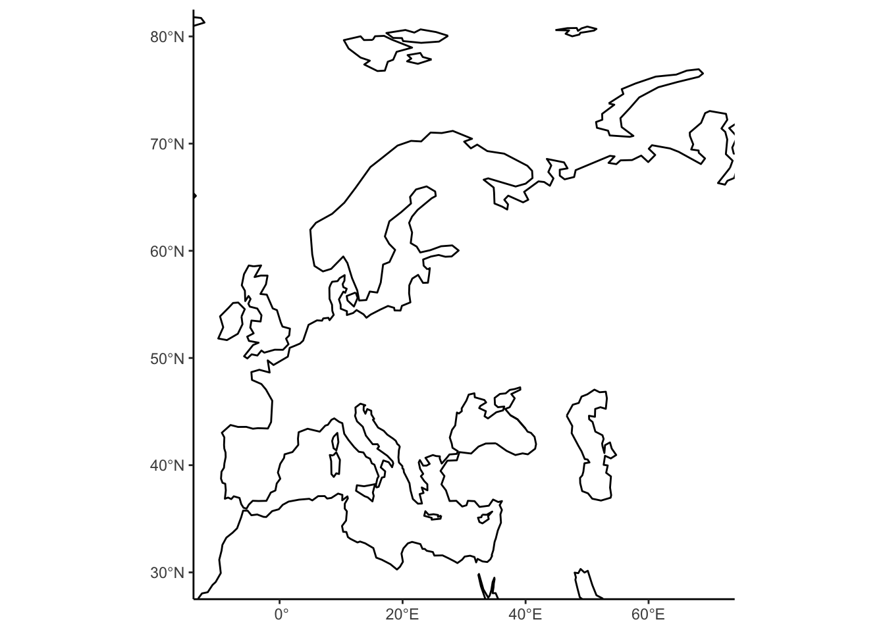

library(sf)
library(rnaturalearth)Plotting tidy spatial data
Introduction
This chapter is a work-in-progress.
Unlike finished chapters which feature extensive explanations and proper problem-solution sets of exercises, the material for this session is still just a rough tutorial, or a set of little code snippets which demonstrate the possibilities of visualizing and working with spatial data.
In light of the work you’ve done on learning tidyverse and ggplot2, the most important thing to realize is that:
Spatial data in R are nothing but tidy data frames. Everything you learned about tidyverse still applies. In fact, those tidyverse concepts are a requirement to being able to do modern spatial data analysis using R.
Spatial data are visualized using ggplot2 concepts of “aesthetics” and “geoms”. This means that, again, whatever you learned about ggplot2 (plus a tiny bit more) applies also to plotting spatial data.
Some resources for later self-study
Start with an introductory chapter from the book Spatial Data Science about the R packages sf and stars available at this link. This chapter includes executable R code, so you can again play around with the most important concepts interactively (which is the only way to learn anything).
Basic introductory tutorial on the concept of “simple features” implemented in the R package sf (which is how tidyverse-compatible spatial data are called, “simple features”): link
A cheatsheet about the R package sf
Let’s apply the most basic concepts of spatial visualizations using sf on our metadata (and later) IBD data. Just a quick exploratory analysis, nothing serious!
Setup and data processing
Load spatial packages:
Load other data science packages:
library(dplyr)
library(readr)
library(ggplot2)Source the IBD and metadata processing pipeline functions:
This will the following functions:
process_metadata()process_ibd()join_metadata()
source("scripts/ibd_utils.R")Read and process IBD and metadata using our utility functions:
# download and process the metadata and IBD data set
metadata <- process_metadata(bin_step = 2500)
ibd_segments <- process_ibd()
# combine the IBD table with metadata information
ibd_merged <- join_metadata(ibd_segments, metadata)This is the same data you worked with during our tidyverse and ggplot2 sessions.
Filter metadata to only individuals who have longitude and latitude values available (use filter(), !is.na() and the & operator) because those are the only ones we can do spatial data analysis on:
metadata <- filter(metadata, !is.na(longitude) & !is.na(latitude))
head(metadata)# A tibble: 6 × 9
sample country continent age coverage longitude latitude y_haplo age_bin
<chr> <chr> <chr> <dbl> <dbl> <dbl> <dbl> <chr> <fct>
1 baa01 South Afri… Africa 1908. 13.5 31.2 -29.5 A1b (0,250…
2 bab01 South Afri… Africa 2040. 1.30 31.2 -29.5 A1b (0,250…
3 I9133 South Afri… Africa 1970 2.08 18.5 -32.0 A1b (0,250…
4 I9028 South Afri… Africa 2103 1.19 18.0 -32.8 A1b (0,250…
5 I9134 South Afri… Africa 1198. 0.699 18.0 -32.8 <NA> (0,250…
6 ela01 South Afri… Africa 493 13.5 29.1 -28.9 <NA> (0,250…Use the function class() to check what kind of data type our metadata is (I know you know it’s a data frame, we’ll get to why we’re doing this soon):
class(metadata)[1] "tbl_df" "tbl" "data.frame"Keep this in mind when you run the following code chunks!
Converting non-spatial data to spatial data
Use the function st_as_sf() to convert the (non-spatially aware) data frame object into one that can be interpreted as spatial data. Save the result as a sf_metadata variable. (You’ll probably get an error message, don’t worry and move along!)
sf_metadata <- st_as_sf(metadata, crs = "EPSG:4326")Error in st_sf(x, ..., agr = agr, sf_column_name = sf_column_name): no simple features geometry column presentThe above got you a rather cryptic error. Honestly, even I don’t think it’s as informative as it should be. But, in any case, you can fix it by running this instead:
sf_metadata <- st_as_sf(metadata, crs = "EPSG:4326", coords = c("longitude", "latitude"))Why do you think this is needed?
Hint: Although it’s easy to think that a table with columns “latitude” and “longitude” is obviously interpretable as spatial data, think about a situation in which the spatial coordinate columns in your data frame were called something else (like “lat” / “lon”, or “x” / “y”, or anything else which is not an “obviously geographical coordinates column”).
When you have created the sf_metadata successfully, what do you see when you type sf_metadata in your R console? Compare this to the output you got from typing the original data frame metadata object into your R console earlier.
head(sf_metadata)Simple feature collection with 6 features and 7 fields
Geometry type: POINT
Dimension: XY
Bounding box: xmin: 17.95 ymin: -32.81 xmax: 31.22 ymax: -28.92
Geodetic CRS: WGS 84
# A tibble: 6 × 8
sample country continent age coverage y_haplo age_bin
<chr> <chr> <chr> <dbl> <dbl> <chr> <fct>
1 baa01 South Africa Africa 1908. 13.5 A1b (0,2500]
2 bab01 South Africa Africa 2040. 1.30 A1b (0,2500]
3 I9133 South Africa Africa 1970 2.08 A1b (0,2500]
4 I9028 South Africa Africa 2103 1.19 A1b (0,2500]
5 I9134 South Africa Africa 1198. 0.699 <NA> (0,2500]
6 ela01 South Africa Africa 493 13.5 <NA> (0,2500]
# ℹ 1 more variable: geometry <POINT [°]>The result in sf_metadata looks almost like a data frame, right? What do you get when you run class(sf_metadata)?
class(sf_metadata)[1] "sf" "tbl_df" "tbl" "data.frame"Notice that you still get the "tbl_df" "tbl" "data.frame" classes which all indicate the object of the type “data frame”. But there’s also a new data type called "sf".
The st_as_sf() function converts a plain data frame into a “spatially annotated data frame” of the class sf (standing for “simple features”). Going into all the details would be too much for this tutorial at this stage, but please do study the introductory chapter on the website of the R package sf.
Note the additional information about “Dimension”, and “CRS” (Coordinate Reference System “WGS 84”) in the output of the sf_metadata table in your R console. Take a look at the Wikipedia article about WGS 84 if you’re interested in knowing more (and you should be!).
How do “spatial tables” relate to “normal tables”?
Unlike tidyverse munging of data frames (where we introduced ggplot2 visualizations after we went through the basics tidyverse), discussing spatial data is much easier to do the other way around, starting from visualizations before heading into the technicalities of coordinate reference systems, spatial geometrical transformations, running geostatistical inferences, etc.
It turns out that sf spatial data is basically a normal data frame with a little bit of extra annotation. This means two things:
All your tidyverse knowledge applies to spatial data just like it applied for “normal data frames”! We’ll practice a little bit about tidyverse in the context of spatial data later.
Not only that, but ggplot2 automatically supports plotting of spatial data points using a dedicated “geom” function
geom_sf()!
As a reminder, the general pattern of plotting with ggplot2 was something like this:
ggplot(<DATA FRAME>, aes(<MAPPING AESTHETICS, LIKE COLOR ETC.>)) +
geom_...() +
OTHER_LAYERS +
[...]Plotting points
Try plotting your sf_metadata using the same pattern, but with a new geom function called geom_sf(). Unlike most of your standard ggplot2 code, use the following pattern, however, in which you specify everything not in the ggplot() function but in geom_sf() instead. The geom_sf() function is used to visualize every possible kind of spatial geometry (some of whom will be shown below).
ggplot() +
geom_sf(data = sf_metadata)Yes, this figure is nothing to write home about, I know. But it’s a start! Plus, if you squint hard enough, you might see an outline of the world “painted” using geo-locations of our metadata samples!
Let’s talk about data types which are possible for spatial data. When you type the sf_metadata into your R console again, you will see the column geometry. What is the data type of this column that you see when you apply the function glimpse() on the sf_metadata variable (remember, although it contains a spatial data object, it is actually still a data frame too!):
glimpse(sf_metadata)Rows: 1,663
Columns: 8
$ sample <chr> "baa01", "bab01", "I9133", "I9028", "I9134", "ela01", "new01…
$ country <chr> "South Africa", "South Africa", "South Africa", "South Afric…
$ continent <chr> "Africa", "Africa", "Africa", "Africa", "Africa", "Africa", …
$ age <dbl> 1908.5, 2040.5, 1970.0, 2103.0, 1198.5, 493.0, 417.5, 378.0,…
$ coverage <dbl> 13.5002128, 1.2986543, 2.0755014, 1.1883686, 0.6993267, 13.4…
$ y_haplo <chr> "A1b", "A1b", "A1b", "A1b", NA, NA, NA, NA, NA, "A0", "B2b",…
$ age_bin <fct> "(0,2500]", "(0,2500]", "(0,2500]", "(0,2500]", "(0,2500]", …
$ geometry <POINT [°]> POINT (31.22 -29.54), POINT (31.22 -29.54), POINT (18.…You see a geometry <POINT [°]> data type. This means that the sf_metadata table contains the geometrical objects which are of the type POINT. This is quite an appropriate data type for locations of samples excavated (or sampled) at a particular location.
Plotting polygons
Now, use the function ne_countries() (from the rnaturalearth R package) to download the spatial coordinates of the countries of the world (note that this package has many other sources of data). Save the result into the variable sf_countries:
sf_countries <- ne_countries()What do you get when you run glimpse() on the newly downloaded data set of the continents in the sf_countries variable? To make the output a little smaller, apply glimpse() to the result %>% piped from select(), maybe like this:
select(sf_countries, name_en, geometry) %>% glimpseRows: 177
Columns: 2
$ name_en <chr> "Fiji", "Tanzania", "Western Sahara", "Canada", "United State…
$ geometry <MULTIPOLYGON [°]> MULTIPOLYGON (((180 -16.067..., MULTIPOLYGON (((…You see a data type geometry <MULTIPOLYGON [°]>. This is a more complex spatial geometry type. You might remember what a “polygon” is from school. A MULTIPOLYGON is simply a collection of polygons, and it is a data type used to describe “area-like” spatial geometries, like outlines of continents or countries.
There are also other spatial data types. See this for a quick list of possible data types that you might encounter in doing spatial data analysis.
Plotting multiple types of spatial features
In the ggplot2 session earlier you’ve learned about the possibility of visualizing multiple geoms in the same figure. This concept becomes even more powerful when visualizing spatial data. Consider the following plot again—we know the points are from planet Earth because they form a roughly world-map-shaped cloud of dots. But we want to add the outline of the continents to make the figure look nicer.
ggplot() +
geom_sf(data = sf_metadata)
To recap the idea of combining multiple geoms on a single ggplot2 figure, let’s start just from visualizing a single geom, this time the outlines of the countries of the world. You can do this using geom_sf() in exactly the same way how you visualized the metadata, just using geom_sf(data = sf_countries) instead of geom_sf(data = sf_metadata):
ggplot() +
geom_sf(data = sf_countries)
You can visualize multiple geoms simply by adding multiple calls to the geom_sf() function, perhaps like this:
ggplot() +
geom_sf(data = sf_metadata) +
geom_sf(data = sf_countries)
Oh, again, the order of layering individual geoms matters, of course. Let’s fix this:
ggplot() +
geom_sf(data = sf_countries) +
geom_sf(data = sf_metadata)Better (but still not very pretty).
Zooming in on a map
Let’s talk about narrowing down the scale of the world we’re looking at. For basic ggplot2 figures, we learned to use the xlim() function. This (and the ylim() function) operates on the Cartesian coordinates system. However, spatial data coordinates are not Cartesian. The world is a globe, and longitude / latitude coordinates (although they might be often written as plain x and y coordinates) have a different meaning. For that reason, ggplot2 provides a spatial-specific version of xlim() and ylim() in the coord_sf() function.
Restrict the geographical range of your spatial figure by adding the layer coord_sf(xlim = c(-25, 60), ylim = c(33, 73)) (note that the units of numbers given for the limits are longitude and latitude degrees):
ggplot() +
geom_sf(data = sf_countries) +
geom_sf(data = sf_metadata) +
coord_sf(xlim = c(-25, 60), ylim = c(33, 73))We got a more “zoomed-in” version of West Eurasia!
Let’s map some aesthetics, to practice the concept of modifying the visual properties of a figure in the spatial context. Most important thing to note here is that everything remains exactly the same as with normal ggplot2.
First, try setting aes(fill = name_en) in the geom_sf(data = sf_countries). The visuals will be a bit cluttered, so immediately add also a new layer + guides(fill = "none"):
ggplot() +
geom_sf(data = sf_countries, aes(fill = name_en)) +
geom_sf(data = sf_metadata) +
coord_sf(xlim = c(-10, 70), ylim = c(30, 80)) +
guides(fill = "none")
Yikes. This is very hard to look at, but it proves the point of showing that spatial figures work exactly the same as ggplot2 figures and that colors can be also mapped in the same way using the aes() concept of “aesthetics”.
Now try setting aes(color = country) in geom_sf(data = sf_metadata) (and remove fill from geom_sf(data = sf_countries):
ggplot() +
geom_sf(data = sf_countries) +
geom_sf(data = sf_metadata, aes(color = country)) +
coord_sf(xlim = c(-10, 70), ylim = c(30, 80)) +
guides(fill = "none")
Notice that the legend for each color of our figure above shows a huge number of countries, despite us “zooming in” on West Eurasia using our coord_sf() layer. For instance, there’s no reason to show values for “USA” etc.
This lets us discuss another topic of spatial data analysis. Just as spatial figures work exactly like ggplot2 figures (because they are!), spatial data processing works exactly like what we learned about tidyverse (because spatial data are just data frames!).
In the chunk of code above, modify this line:
geom_sf(data = sf_metadata, aes(color = country))to look like this:
geom_sf(data = filter(sf_metadata, continent == "Europe"), aes(color = country))So the entire code looks like this:
ggplot() +
geom_sf(data = sf_countries) +
geom_sf(data = filter(sf_metadata, continent == "Europe"), aes(color = country)) +
coord_sf(xlim = c(-10, 70), ylim = c(30, 80)) +
guides(fill = "none")Compare the difference to the previous figure!
Note: How exactly you apply tidyverse principles is up to you. If you’d like to take things step by step, you could also do this and run filter() first to create a new (maybe just a temporary) variable. This can be useful if you need to do much more tidyverse spatial munging (maybe by chaining together several %>% operations), which would be unreadable inside the geom_sf(data ...) function call. This does the same thing as the code just above (notice that we first create a new variable and only then use it in geom_sf(data = ...):
sf_metadata_eur <- filter(sf_metadata, continent == "Europe")
ggplot() +
geom_sf(data = sf_countries) +
geom_sf(data = sf_metadata_eur, aes(color = country)) +
coord_sf(xlim = c(-10, 70), ylim = c(30, 80)) +
guides(fill = "none")
Coloring by countries is maybe not that interesting. How about if we color the sf_metadata_eur by the Y chromosome haplogroup of a given sample?
sf_metadata_eur <- filter(sf_metadata, continent == "Europe")
ggplot() +
geom_sf(data = sf_countries) +
geom_sf(data = sf_metadata_eur, aes(color = y_haplo)) +
coord_sf(xlim = c(-10, 70), ylim = c(30, 80)) +
guides(fill = "none")We have metadata from many female individuals with (obviously) missing information about the Y haplogroup. Let’s filter for individuals who are male, saving the results into sf_metadata_eur_y:
sf_metadata_eur_y <- filter(sf_metadata, continent == "Europe" & !is.na(y_haplo))
ggplot() +
geom_sf(data = sf_countries) +
geom_sf(data = sf_metadata_eur_y, aes(color = y_haplo)) +
coord_sf(xlim = c(-10, 70), ylim = c(30, 80)) +
guides(fill = "none")
The data is cleaner, but no pattern is emerging yet. In our data, we have also information about the ages of our individuals (for instance, the age_bin column):
head(sf_metadata_eur_y)Simple feature collection with 6 features and 7 fields
Geometry type: POINT
Dimension: XY
Bounding box: xmin: 13.54 ymin: 37.85 xmax: 21.74 ymax: 41.96
Geodetic CRS: WGS 84
# A tibble: 6 × 8
sample country continent age coverage y_haplo age_bin
<chr> <chr> <chr> <dbl> <dbl> <chr> <fct>
1 Klei10 Greece Europe 6062. 2.05 G2a (5000,7500]
2 ST3 Italy Europe 14800 0.475 I2a (12500,15000]
3 R11 Italy Europe 11908 0.958 I2a (10000,12500]
4 R7 Italy Europe 10682. 3.15 I2a (10000,12500]
5 R15 Italy Europe 9124. 3.07 I2a (7500,10000]
6 R9 Italy Europe 7496 4.04 G2a (5000,7500]
# ℹ 1 more variable: geometry <POINT [°]>Let’s try splitting the data based on an age bin (+ facet_wrap(~ age_bin)). Maybe something interesting pops up?. Additionally, let’s remove the grey background using + theme_minimal()
sf_metadata_eur_y <- filter(sf_metadata, continent == "Europe" & !is.na(y_haplo))
ggplot() +
geom_sf(data = sf_countries) +
geom_sf(data = sf_metadata_eur_y, aes(color = y_haplo), size = 1) +
coord_sf(xlim = c(-10, 70), ylim = c(30, 80)) +
guides(fill = "none") +
facet_wrap(~ age_bin)+
theme_minimal()I’ll leave the historical and evolutionary interpretation to you, at this stage. 🙂
Other rnaturalearth data
First of all, the rnaturalearth package is only one of great many possible sources of spatial data (maybe one of the most convenient to download into R but still, just one of many).
The good thing is, that the sf data type represents a universal format for storing spatial data sets. You can even import spatial data from other sources!
That being said, here are a couple of more examples of data provided by the rnaturalearth resource:
ne_download()
This function downloads all sorts of spatial data made available by the public domain Natural Earth project.
sf_data <- ne_download(scale = "small", type = "land", category = "physical")ggplot() +
geom_sf(data = sf_data) +
coord_sf(xlim = c(-10, 70), ylim = c(30, 80)) +
theme_minimal()
ne_countries() (you’re already familiar with this)
sf_data <- ne_countries()
ggplot() +
geom_sf(data = sf_data) +
coord_sf(xlim = c(-10, 70), ylim = c(30, 80)) +
theme_minimal()
ne_coastline()
sf_data <- ne_coastline()
ggplot() +
geom_sf(data = sf_data) +
coord_sf(xlim = c(-10, 70), ylim = c(30, 80)) +
theme_classic()
Plotting lines
Take the following purely as a demonstration of other sf / ggplot2 visualization features. Don’t take any of the IBD results as conclusive or authoritative in any way!
We will first download the aggregate IBD data and only retain information relevant for our exploratory analysis here:
ibd_sum <-
read_tsv("http://tinyurl.com/simgen-ibd-sum") %>%
filter(distance > 0 & rel == "none") %>%
select(sample1, sample2, total_ibd, n_ibd)Let’s also process the metadata again, this time adding a more fine-grained time binning (bins of 1000 years, instead of 5000 years like in our tidyverse session):
sf_metadata <- process_metadata(bin_step = 1000) %>%
filter(!is.na(longitude) & !is.na(latitude)) %>%
st_as_sf(crs = "EPSG:4326", coords = c("longitude", "latitude"))Merge the IBD data table with the (spatial!) table of metadata. This effectively turns the IBD table we read just above this step into a spatial table too, because after this processing step it will also has spatial geometry columns for both sample1 and also sample2:
(This code is very ugly because it was written in haste without much thinking put into it. It will be polished in a later version.)
Now we have a tidy spatially-aware data frame of all IBD aggregate links saved in a variable sf_ibd. When you type it out into your R console, you can see a new geometry data type LINESTRING, which represents connections between points on a map. In this case, they represent IBD “links” connecting two individuals across space and time.
sf_ibdSimple feature collection with 1284 features and 8 fields
Geometry type: LINESTRING
Dimension: XY
Bounding box: xmin: -170.1 ymin: -55.01 xmax: 151 ymax: 70.72
Geodetic CRS: WGS 84
# A tibble: 1,284 × 9
sample1 sample2 total_ibd link time_bin1 time_bin2
<chr> <chr> <dbl> <LINESTRING [°]> <fct> <fct>
1 0LS10 NEO224 10.9 (26.55 59.5, 13.573 58.166) (2000,30… (3000,40…
2 12881A VK538 15.0 (0.18 52.08, 15.26 41.34) (1000,20… (0,1000]
3 12881A VK553 11.0 (0.18 52.08, 22.25 58.17) (1000,20… (1000,20…
4 15569A R1221 22.1 (0.07 52.26, 12.47 41.9) (1000,20… (0,1000]
5 15569A VK384 18.0 (0.07 52.26, 10.2 55.95) (1000,20… (1000,20…
6 15570A VK289 10.2 (0.07 52.26, 10.69 54.8) (1000,20… (0,1000]
7 19651 Kennewick 19.6 (-121.77 51.3, -119.14 46.21) (7000,80… (8000,90…
8 84001 VK529 10.0 (17.72 59.62, 14.79 67.64) (0,1000] (1000,20…
9 84005 VK14 10.9 (17.72 59.62, 32.3 60) (0,1000] (0,1000]
10 84005 VK17 19.4 (17.72 59.62, 32.3 60) (0,1000] (0,1000]
# ℹ 1,274 more rows
# ℹ 3 more variables: country1 <chr>, country2 <chr>, n_ibd <dbl>Note: The LINESTRING type is of the format (lon1 lat1, lon2 lat2) (longitude and latitude of sample1, and the same for sample2).
As with points and polygons, spatial geometries represented by lines can be visualized in exactly the same way, using the magical ggplot2 function geom_sf().
Let’s use it and some basic tidyverse filtering to look for potentially interesting historical patterns of IBD sharing across space and time. Specifically, let’s trace the IBD links between different countries and see where else in the world can they be linked to.
You could do obviously a much more careful and rigorous exploratory (or even properly statistical) analysis of this. This is just a quick sketch of an idea showing how little ggplot2 / sf / tidyverse code you actually need to plot some fascinating data from ancient DNA!
Where do IBDs link Estonia to?
# filter for IBDs with one individual being from Estonia
sf_ibd_target <- filter(sf_ibd, country1 == "Estonia" | country2 == "Estonia")
ggplot() +
geom_sf(data = sf_countries, alpha = 0.5) +
geom_sf(data = sf_ibd_target, color = "purple") +
coord_sf(xlim = c(-25, 100), ylim = c(30, 80)) +
guides(fill = "none") +
theme_bw() +
facet_wrap(~ time_bin2) +
ggtitle("One IBD 'anchored' in Estonia, the other elsewhere in the world",
subtitle = "Individual panels show time windows [years BP]")Where do IBDs link Ukraine to?
The time bin (4000,5000] is very cool I think—Yamnaya migration!
# filter for IBDs with one individual being from Ukraine
sf_ibd_target <- filter(sf_ibd, country1 == "Ukraine" | country2 == "Ukraine")
ggplot() +
geom_sf(data = sf_countries, alpha = 0.5) +
geom_sf(data = sf_ibd_target, color = "purple") +
coord_sf(xlim = c(-25, 100), ylim = c(30, 80)) +
guides(fill = "none") +
theme_bw() +
facet_wrap(~ time_bin2) +
ggtitle("One IBD 'anchored' in Estonia, the other elsewhere in the world",
subtitle = "Individual panels show time windows [years BP]")Where do IBDs link Spain to?
Again, the time bin (4000,5000] is consistent with this study on the impact of the Yamnaya migration on the populations of Iberia.
# filter for IBDs with one individual being from Spain
sf_ibd_target <- filter(sf_ibd, country1 == "Spain" | country2 == "Spain")
ggplot() +
geom_sf(data = sf_countries, alpha = 0.5) +
geom_sf(data = sf_ibd_target, color = "purple") +
coord_sf(xlim = c(-25, 100), ylim = c(30, 80)) +
guides(fill = "none") +
theme_bw() +
facet_wrap(~ time_bin2) +
ggtitle("One IBD 'anchored' in Estonia, the other elsewhere in the world",
subtitle = "Individual panels show time windows [years BP]")Where do IBDs link Denmark to?
Very clear evidence of the Viking era in the (0,1000] years BP time bin, I think.
# filter for IBDs with one individual being from Denmark
sf_ibd_target <- filter(sf_ibd, country1 == "Denmark" | country2 == "Denmark")
ggplot() +
geom_sf(data = sf_countries, alpha = 0.5) +
geom_sf(data = sf_ibd_target, color = "purple") +
coord_sf(xlim = c(-25, 100), ylim = c(30, 80)) +
guides(fill = "none") +
theme_bw() +
facet_wrap(~ time_bin2) +
ggtitle("One IBD 'anchored' in Estonia, the other elsewhere in the world",
subtitle = "Individual panels show time windows [years BP]")